Co-op Mission Guide: Cradle of Death
Moebius Battle Station
Sections on this Page
Mission Summary
Moebius Corps is using this massive battle station to target Dominion colonies. Help Stone deliver xel'naga artifacts to key target sites in order to destroy the station and save innocent lives.

Objectives
Primary Objective
- Escort Artifact Trucks to Hybrid Facility
- Escort Artifact Trucks to Xenon Reactor
- Escort Artifact Trucks to Resource Stockpile
- (Escort Artifact Trucks to Vespene Refinery)
or
- (Escort Artifact Trucks to Terrazine Extractors)
- Don't let Battle Station come online
Secondary Objective
- Escort Artifact Truck to Moebius Research Outpost (2)
Determining Objective Order
It is first important to understand the order of the objectives before analyzing enemy bases. Cradle of Death is a mission that has a random element to the objectives. The image below shows the objective locations. These names will be used throughout the guide to refer to the specific objectives on the map.
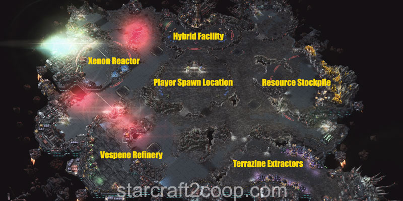
Which objectives you have to do and in which order is determined at the start of the game. Objective orders are as follows:
| Order | Objective |
|---|---|
| 1 | Hybrid Facility |
| 2 | Xenon Reactor or Resource Stockpile |
| 3 | Xenon Reactor or Resource Stockpile |
| 4 | Vespene Refinery or Terrazine Extractor |
In other words, the Hybrid Facility will always be done first, as that is where your expansion is. The next two objectives will be the Xenon Reactor and the Resource Stockpile, in a random order. Then, either the Vespene Refinery or the Terrazine Extractor will need to be done.
Most of the time, you will be able to see which objective you need to work on next because they get marked on the minimap. However, in the case of some mutators like "Afraid of the Dark", these objectives will not be marked on the minimap. In this case, you can use the ramp lights to determine which objective needs to be targeted next. Ramp lights on ramps leading out of your base will turn green when that objective becomes active:
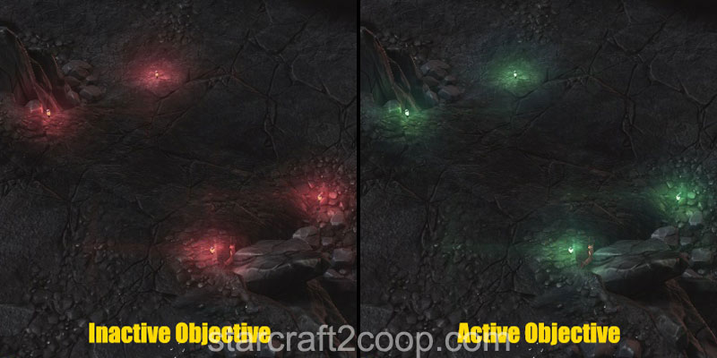
Some players would like to pre-scout the order of objectives. This can be done at the very beginning, usually using your Artifact truck. To determine the order of objectives:
- The Hybrid Facility will always be the first objective.
- Send your truck towards the Xenon Reactor. If there is no construct outside the ramp leading to the Reactor, the Xenon Reactor will be the second objective.
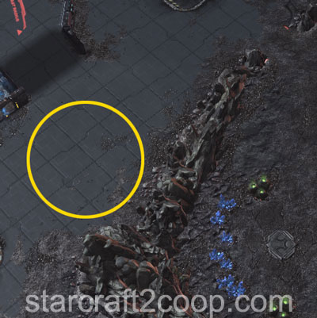
- Given that you know the second objective, the third objective will be either the Resource Stockpile, or the Xenon Reactor, whichever one is still remaining.
- Send your truck towards the Terrazine Extractors. If the valley entrance is guarded by constructs, it is the fourth objective. If there are no constructs, the fourth objective is the Vespene Refinery
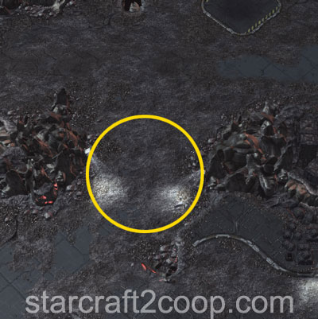
Enemy Base Analysis
Change all base analysis pictures to race:
The purpose of the trucks is to not only escort them to a particular beacon on the map. The trucks also disable the Xel'Naga Constructs, scattered on your way to each objective. These Constructs cannot be targeted and deal large amounts of damage until they are disabled by the trucks. Once disabled, they can be targeted and killed.
The first objective will require you to destroy the Hybrid Facility. This area also contains your expansion, so clearing it as fast as possible is critical for a healthy economy. The area is guarded very lightly.
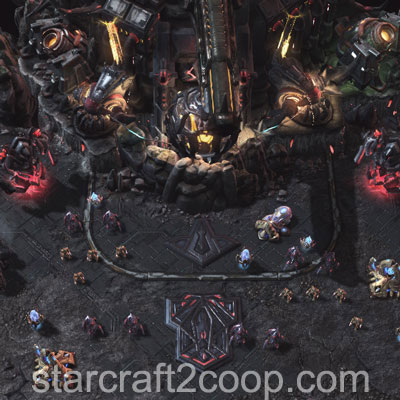
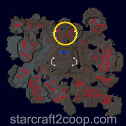
The second or third objective will be the Resource Stockpile (see the section above for details). If it is the second objective, the base will look like the one on the left. If it is the third objective, it will look like the one on the right. Notice the presence of Hybrids and the additional Construct.
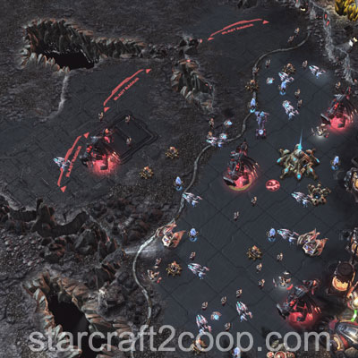
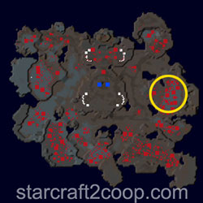
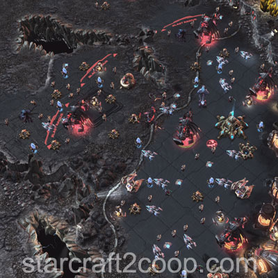
If the Xenon Reactor is the third objective, you will need to fight a small camp of enemies before climbing up the ramp.
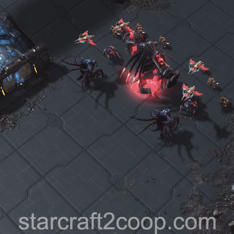
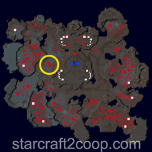
The second or third objective will be the Xenon Reactor (see the section above for details). If it is the second objective, the base will look like the one on the left. If it is the third objective, it will look like the one on the right. Notice the presence of Hybrids and the additional Construct.
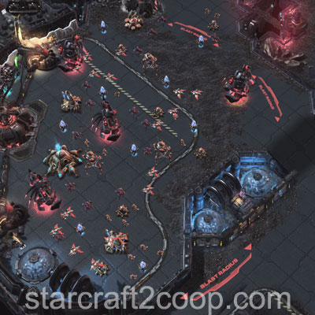
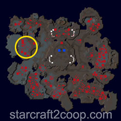
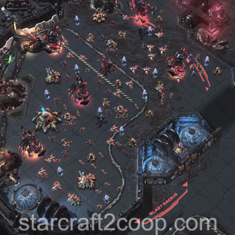
If the last objective is the Terrazine Extraction area, you will need to go South-East to get to it. Notice the Constructs guarding the entrance to the valley there. This area is guarded with a heavy ground presence.
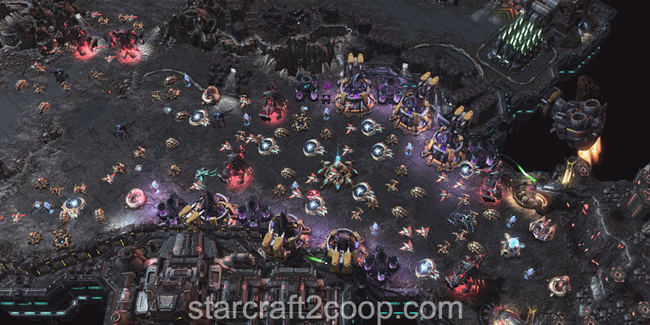
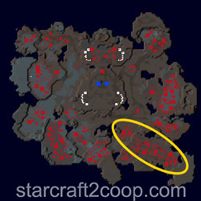
If the last objective is the Vespene Refinery area, you will need to go South-West to get to it. This area is guarded with a heavy air presence.
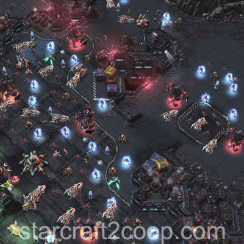
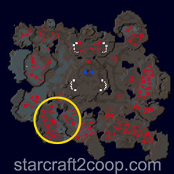
Completing the Bonus Objective
The bonus objective requires you to Move your truck in front of a Moebius Research Outpost, which is guarded by a Construct and an enemy camp.
There are a total of two bonus objectives present on the map. One will appear when the second main objective activates, and one will appear when the third main objective activates. Additionally, the first bonus objective will always lie in the north of the main objective. The second bonus objective will always lie to the south of the main objective.
For the Resource Stockpile, the northern bonus area is shown below. This will be the bonus area you will need to clear if the Resource Stockpile is the second main objective.
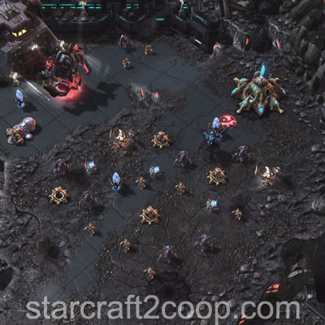
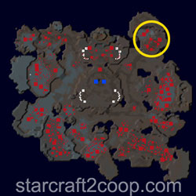
For the Resource Stockpile, the southern bonus area is shown below. This will be the bonus area you will need to clear if the Resource Stockpile is the third main objective.
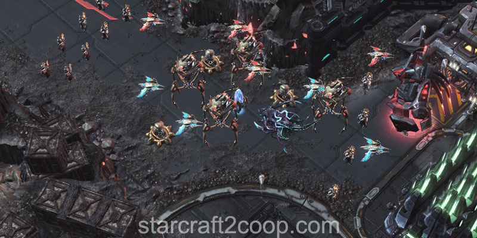
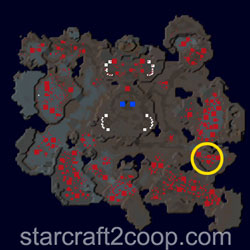
For the Xenon Reactor, the northern bonus area is shown below. This will be the bonus area you will need to clear if the Xenon Reactor is the second main objective.
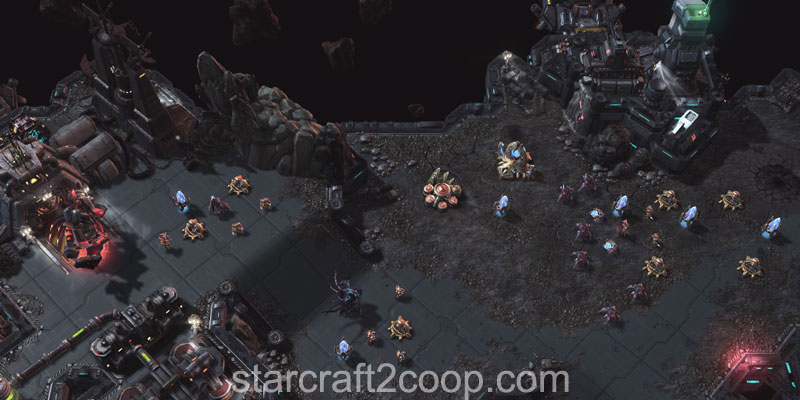
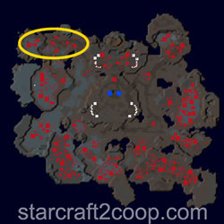
For the Xenon Reactor, the southern bonus area is shown below. This will be the bonus area you will need to clear if the Xenon Reactor is the third main objective.
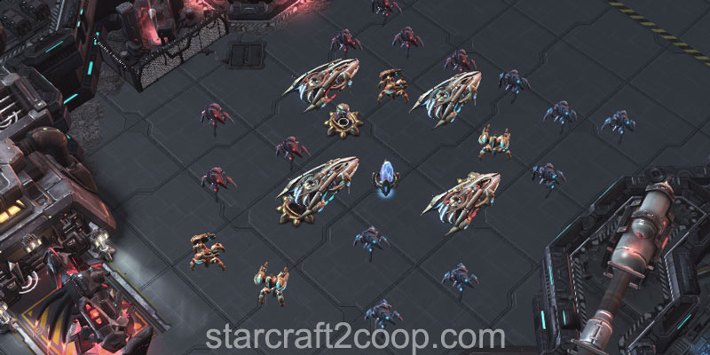
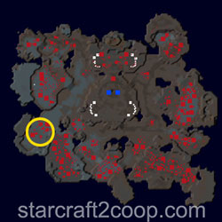
Timings
Note: Information on Tech and Strength levels can be found on the Enemy Compositions page.
Due to the nature of this map, there are two types of attacks on this map:
- Attack Waves: These are strong forces that target player bases. They occur infrequently throughout the mission.
- Drop Attacks: These are smaller forces that are used to attack a player's truck.
The Attack Wave Timings for this mission are:
| Wave | Time | Tech Level | Strength Level |
|---|---|---|---|
| 1 | 4:00 | 1 | 1 |
| 2 | 6:00 | 1 | 2 |
| 3 | 9:00 | 2 | 2 |
| 4 | 12:00 | 3 | 2 |
| 5 | 15:00 | 4 | 4 |
| 6 | 18:00 | 4 | 4 |
| 7 | 21:00 | 5 | 5 |
| 8 | 25:00 | 6 | 5 |
| 9 | 29:00 | 7 | 6 |
Note: Attack Waves will only spawn when there is more than 1:30 left on the clock. If there is less time, the attack waves will be delayed until that particular objective is complete. Once complete, the attack wave will spawn.
The Drop Attack Timings are slightly more complicated. They are based on the start time of the objective, rather than the total mission time. The timings below denote the elapsed time after the particular objective has started:
Note: Drop Attacks will occur as long as either player's truck is still alive. If both trucks are down, the Drop Attacks will wait until one spawns before attacking.
Objective 1:
No drop attacks.
Objective 2:
| Wave | Elapsed Time Since Objective Start | Tech Level | Strength Level |
|---|---|---|---|
| 1 | 2:30 | 1 | 1 |
| 2 | 4:30 | 1 | 1 |
Objective 3:
| Wave | Elapsed Time Since Objective Start | Tech Level | Strength Level |
|---|---|---|---|
| 1 | 1:30 | 1 | 2 |
| 2 | 2:30 | 2 | 2 |
| 3 | 4:30 | 2 | 2 |
Objective 4:
| Wave | Elapsed Time Since Objective Start | Tech Level | Strength Level |
|---|---|---|---|
| 1 | 2:00 | 3 | 2 |
| 2 | 3:00 | 3 | 2 |
| 3 | 4:00 | 3 | 3 |
The Drop Attacks select units from a different pool to the regular attack waves. This pool is shown below:
| Tech Level | Protoss Pool | Terran Pool | Zerg Pool |
|---|---|---|---|
| 1 | Roaches / Zealots | Marines / Zerglings | Medics / Zerglings |
| 2 | Goliaths / Zealots | Marines / Phoenixes | Scouts / Zerglings |
| 3 | Goliaths / Zealots / Carriers / Roaches | Marines / Phoenixes / Thors / Zerglings | Scouts / Zerglings / Medics / Ultralisks |
Spawn Points
Attack waves will spawn from the location of the next objective you will need to complete. In the case you are on the final objective, it will spawn from the side you did not attack.
The image below shows you the spawn point if the Attack Wave is coming from the Resource Stockpile side.
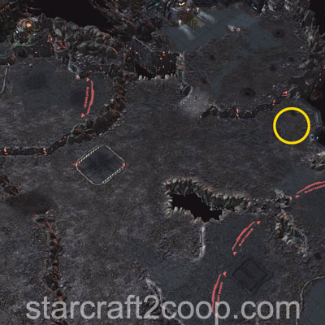
The image below shows you the spawn point if the Attack Wave is coming from the Xenon Reactor side.
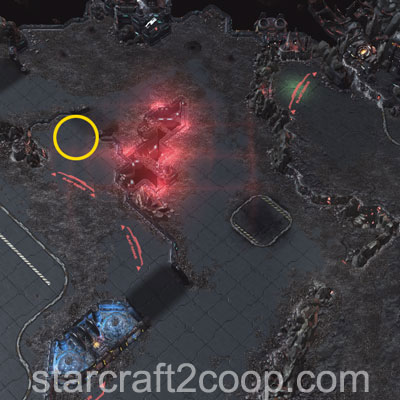
The image below shows you the spawn point for the last two locations for the attack waves. After the completion of the third objective and you move on to the last objective, the attack wave positions will switch between the two.
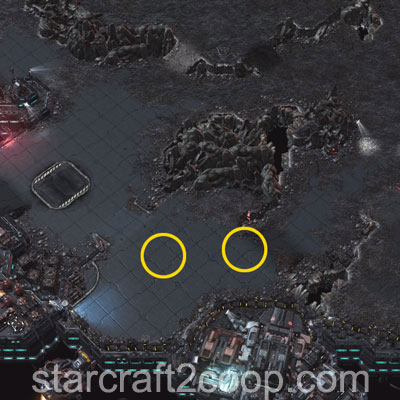
While it is theoretically possible to predict the objective pattern using the attack wave pattern, this method is highly impractical because information is not provided until very late in the game.
Drop Attacks will try to target areas near your truck. There are two possible cases for your truck's position:
- If your truck is in your main, or your expansion, the Drop Attacks will drop outside the base of your ramp. They will never spawn inside your bases. The area that they will spawn on will be the one that is closest to your truck.
- If your truck is anywhere else on the map, the Attacks will drop a little distance away from your truck, in a location that lies in between the truck and the objective. In essence, they will try to block your truck from reaching the objective.
Mission Tips
- If you want to pre-scout the mission order, use the trucks to do so.
- Send trucks into constructs first, before your army to reduce damage. Trucks are fairly rugged, and have a low attack priority, so enemies will de-aggro your truck as soon as they see your army.
- The only entrances to your base are through your ramps, which can easily be defended.
- Do not bother with clearing out all enemies and buildings from objective areas. The goal is to clear the construct on the beacon. Once your truck is in position, it is immune to damage.
Commander-specific Tips
- Abathur: Place Toxic Nests outside the Hybrid Facility and lure the units with your truck to get the biomass.
- Kerrigan: Place plenty of Omega worms around the map to be able to deal with the attack waves as well as push effectively.
- Zeratul: Place plenty of Void Arrays around the map to be able to deal with the attack waves as well as push effectively.